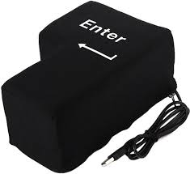

Método de comunicación digital que permite enviar y recibir mensajes, documentos e imágenes a través de redes informáticas
Emulación
Técnica que permite que un sistema informático simule el funcionamiento de otro, como cuando un programa de Windows corre en un sistema Mac.
Encriptar
Proceso de convertir información en un código seguro para protegerla de accesos no autorizados.
Enter
Tecla del teclado que confirma comandos, introduce datos o ejecuta acciones en sistemas informáticos.
Error fatal
Tipo de error crítico en un programa o sistema que impide su funcionamiento y puede provocar su cierre inesperado.